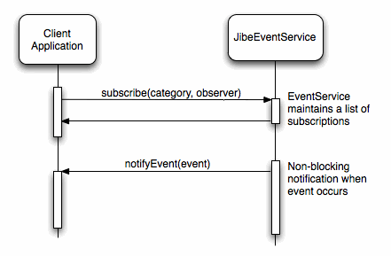

| Overview |
|
|
||
| PREV NEXT | FRAMES NO FRAMES | ||
There are many situations where the Jibe SDK Service needs to notify a client application of some change in state. The Jibe SDK uses two mechanisms to implement these notifications:
The Jibe SDK uses the Android Intent mechanism, to notify a (potentially inactive) application that events have occurred. The SDK uses the Broadcast Intent mechanism, so applications need to declare a interest in the Intents that they wish to receive.
The Intents generated by the Jibe SDK are defined in the JibeIntents class.
The JibeEventService implements an observer mechanism, which allows client applications to register an interest in specific categories of events. The service will then call the application, whenever such an event occurs.
Event categories exist for all of the main service features. These are defined in JibeEvent.CategoryEvent notification is asynchronous, and therefore non-blocking: the client application's processing of an event will not cause the Jibe SDK Service to wait.

|
|
||
| PREV NEXT | FRAMES NO FRAMES | ||